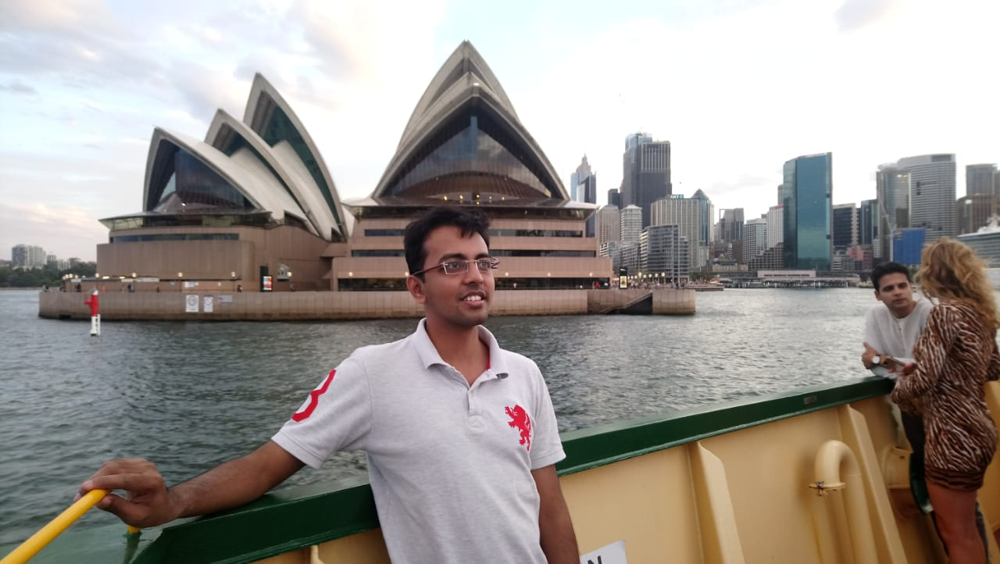

About Me
Medical Education
- M.B.B.S. graduate from Rajarshee Chhatrapati Shahu Maharaj Govt. Medical College, Kolhapur, India in 2009.
- Completed compulsory rotation internship in all major and minor wards from Byramjee Jeejeebhoy Medical College and associated Sasoon Hospital, Pune, India, in 2010
- Permanent Registration obtained (Maharashtra Medical Council), India in 2010.
- Cleared M.R.C.P.(Member of Royal College Physicians), U.K. Part 1 in 2013.
- Cleared M.R.C.P.(Member of Royal College Physicians), U.K. Part 2 in 2014.
Oncology Calling
- Completed postgraduation (M.D.) in Internal Medicine from Seth GS Medical College and associated King Edward Memorial Hospital, Mumbai, India, in June 2014.
- Completed Super specialization (D.M.) in Medical oncology from Tata Memorial Centre, Mumbai, India, from 1st August 2015 to 31st July 2018.
- Participated in the research methodology ACORD Workshop, Sydney, Australia, 2018 as a student.
Professional Experience
- Completed one year of Specialist Medical Officer in Dept of Internal Medicine, Seth GS Medical College and associated King Edward Memorial Hospital, Mumbai, India, in June 2015.
- Started working as Specialist Senior Registrar from 1st August 2018.